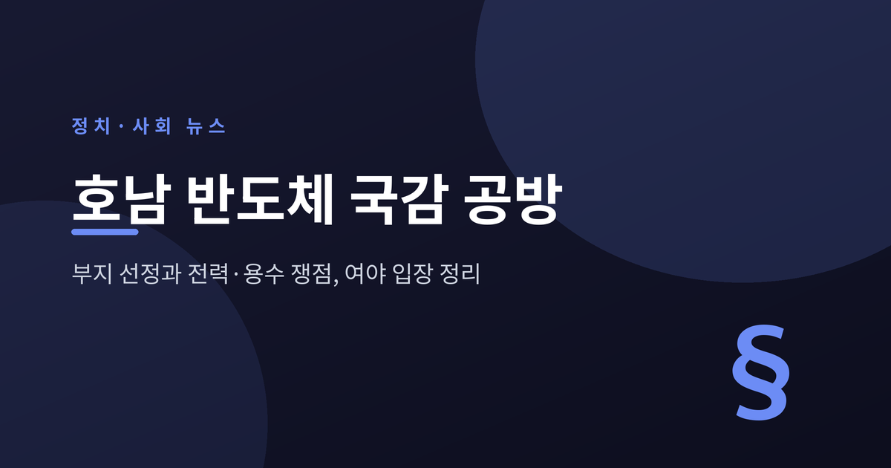
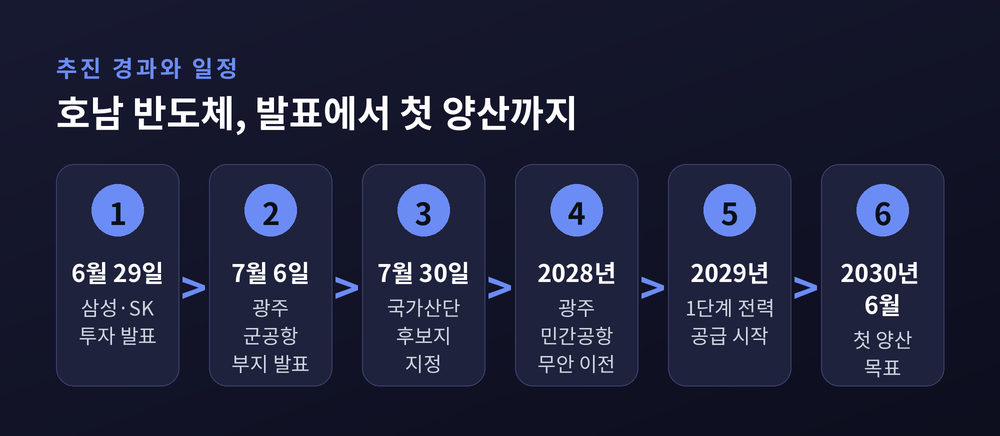
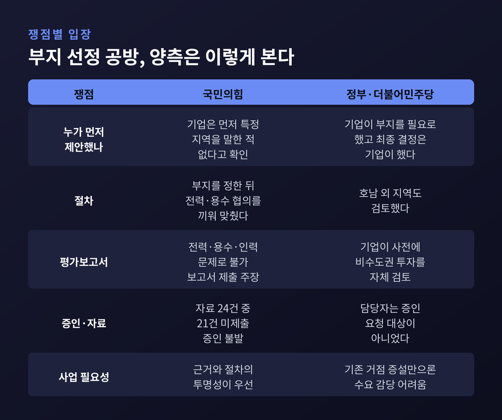
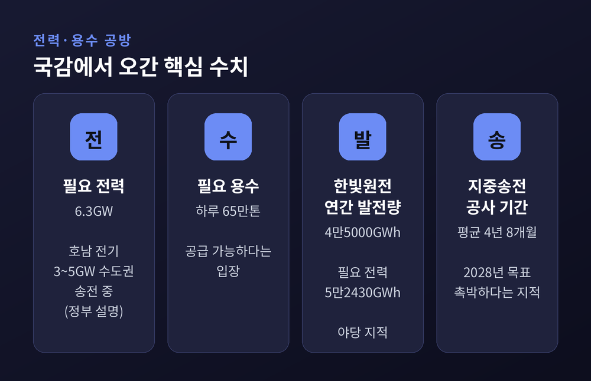
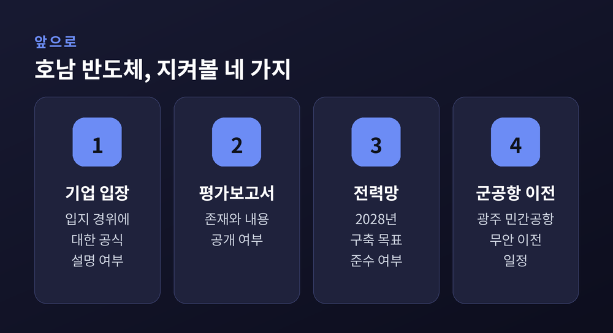

2026년 국정감사 첫날인 10월 6일, 국회 산업통상자원중소벤처기업위원회에서 '호남 반도체'가 가장 뜨거운 주제로 올랐습니다. 이번 글에서는 이 사업이 무엇인지, 여야가 어떤 지점에서 맞섰는지, 앞으로 무엇을 지켜봐야 하는지를 순서대로 정리해 보겠습니다. 국민의힘과 더불어민주당, 정부의 주장은 가능한 한 나란히 적었습니다.
세 줄 요약
10월 6일 산자위 국정감사에서는 정부가 호남 반도체 입지를 정한 과정이 핵심 질의로 이어졌습니다. 국민의힘 의원들은 절차와 공정성을 물었고, 더불어민주당 의원들은 사업의 필요성과 기업의 자율 판단을 강조했습니다.
공방의 중심에는 한 가지 질문이 있었습니다. "누가 먼저 호남을 꺼냈느냐"입니다.
김정관 산업통상부 장관은 "기업이 생산 부지가 필요했고 정부는 제안했으며 최종적인 결정은 기업이 했다"고 답했습니다(비즈워치). 호남권 이외에도 검토한 지역이 있었다는 설명도 덧붙였습니다(아시아경제).
국민의힘 조지연 의원은 달리 말했습니다. 9월부터 기업에 문의한 결과 기업이 일관되게 "먼저 특정 지역을 얘기한 적이 없다"고 답했고, 호남 투자계획을 밝히거나 특정 지역 투자를 확정한 바도 없다고 했다는 것입니다(비즈워치). 정부 설명과 기업 측 답변으로 전해진 내용이 엇갈리는 셈입니다.
같은 날 별도로 진행된 전력·용수 질의까지 합치면, 첫날 호남 반도체를 둘러싼 논점은 입지, 인프라, 국감 절차 세 갈래로 정리됩니다.
호남 반도체는 호남권에 대규모 반도체 생산단지를 조성하는 정부·기업 구상을 가리킵니다. 보도를 종합하면 삼성전자와 SK하이닉스가 합산 약 800조원을 투자하고, 두 회사가 각각 팹 2기씩 모두 4기를 짓는 계획입니다(파이낸셜뉴스 7월 6일, 중앙이코노미뉴스 9월 17일).
부지는 광주 군공항 터로, 면적은 약 820만㎡(약 250만평)입니다. 국유지이고 이미 평탄화가 되어 있으며 KTX 송정역과 가깝다는 점이 장점으로 제시됐습니다(파이낸셜뉴스, MTN). 7월 6일 강훈식 대통령 비서실장은 "기업들은 호남권 입지 후보지 중에 광주 군공항이 가장 적합한 부지라는 의견을 제시했다"고 발표했습니다. 이 문장이 바로 이번 국감에서 사실관계 논쟁의 출발점이 된 대목입니다.
이후 7월 30일에는 광주 군공항 부지가 '호남권 반도체 국가산단' 후보지로 지정됐습니다(MTN). 광주시는 "역사적 출발점"이라며 환영했습니다.

일정표는 빠듯합니다. 중앙이코노미뉴스에 따르면 2027년 무안공항 활주로 정비를 마치고, 2028년 상반기에 광주 민간공항을 무안으로 옮기며, 2028~2029년 팹을 짓고, 2029년 1단계 전력 공급을 시작해 2030년 6월 첫 양산을 노립니다. 군공항 이전과 산단 조성을 순서대로 하지 않고 병행한다는 방침이어서, 어느 한 단계가 늦어지면 전체가 영향을 받는 구조입니다.
800조원이라는 숫자는 한 번의 국정감사에서 다룰 만한 크기를 넘어섭니다. 메모리 반도체 수요가 늘어나는 상황에서 어디에 어떤 규모로 생산기지를 둘 것인가는 산업 경쟁력과 직결됩니다.
정부와 민주당은 이 사업을 '필수'로 봅니다. 장철민 의원은 용인·평택·청주 등 기존 거점 증설만으로는 앞으로의 메모리 수요 증가를 감당하기 어렵다고 말했습니다(아시아경제). 백혜련 의원은 반도체 산업이 무너지면 한국 경제 자체가 흔들린다고 짚었습니다.
한편 이 사업은 지역균형발전이라는 정책 목표와도 맞닿아 있습니다. 광주 지역 상공계는 환영하면서 규제 완화와 전력·용수의 조기 확충을 요청했습니다(MTN). 민주당 광주시당은 투자 발표 당시 "역사적 전환점"이라고 평가했습니다.
반면 국민의힘은 이렇게 큰 국책 사업일수록 입지 결정의 근거와 절차가 투명해야 한다고 주장합니다. 예전엔 기업의 입지 선택이 주로 경제성 논리로 설명됐다면, 지금은 정부가 어디까지 관여했는지가 정치적 질문이 된 것입니다.
여야의 입장 차를 표로 정리하면 이렇습니다.

국민의힘 박성민 의원은 부지를 먼저 결정하고 용수·전력·미군 협의를 뒤따라 끼워 맞추는 방식이라고 지적했습니다(아시아경제). 서지영 의원은 광주·전남 이외 지역과 소통했는지, 기업에 전달한 자료와 그 시점을 확인해 달라고 요청했습니다. 윤한홍 의원은 삼성과 SK가 전력·용수·인력 문제 때문에 호남 반도체가 불가능하다는 평가보고서를 정부에 냈다고 주장했습니다(비즈워치, 아주경제). 다만 이 보고서의 실물이 공개되지는 않았으므로, 현재로서는 의원 주장으로 받아들여야 합니다.
민주당 박희승 의원의 반론은 다른 방향입니다. 기업이 이미 비수도권 투자를 자체 검토해 왔다는 것입니다. 박 의원은 삼성전자 사장을 만났을 때 "전북 남원 등에 200만평 정도 반도체 클러스터가 들어갈 땅이 있느냐는 질문을 받았다"고 전했습니다(비즈워치). "대기업이 대규모 투자를 하는데 손익 계산을 안 했겠느냐"는 말도 했습니다(아주경제).
어느 쪽이 사실에 가까운지는 아직 가리기 어렵습니다. 기업 관계자가 증인으로 나와 직접 답한 것이 아니기 때문입니다.
이 사업의 진짜 시험대는 인프라라는 시각이 많습니다. 파이낸셜뉴스와 전자신문 보도를 보면, 필요한 전력은 6.3GW, 용수는 하루 65만톤입니다.
김성환 기후에너지환경부 장관은 "호남에서 생산된 전기 중 평균 3~5GW가 지역에서 쓰이지 못하고 수도권으로 송전"되고 있으며, 전력 6.3GW와 용수 65만톤 공급이 가능하다고 답했습니다. 기존 선로를 활용하면 전력망 구축 기간을 줄일 수 있고, 목표를 당초 2029년 말에서 2028년으로 앞당겼다는 설명도 있었습니다. 새로 잇는 송전선은 약 32㎞입니다.
민주당 신정훈 의원은 호남이 지역 소비량의 약 2배에 달하는 전력을 외부로 보내고 있다며 "부족한 것은 물과 전기가 아니라 산업 인프라"라고 했습니다.
국민의힘의 문제 제기는 숫자에 기댔습니다. 이종배 의원은 호남의 기저전원인 한빛원전의 연간 발전량(4만5000GWh)이 클러스터 필요 전력(5만2430GWh)에 못 미친다고 짚었고, 재생에너지가 피크 시간대에 얼마나 기여하는지도 의문이라고 했습니다. 윤재옥 의원은 최근 10년간 지중송전 사업의 평균 시공기간이 4년 8개월이라는 점을 들어 2028년 목표가 촉박하다고 지적했습니다.

두 주장이 모두 숫자를 근거로 삼고 있다는 점이 눈에 띕니다. 한쪽은 순간 출력에 해당하는 잉여 전력을, 다른 쪽은 연간 발전량이라는 총량을 내세웠습니다. 기준이 다르면 같은 호남 전력 사정도 다르게 보일 수 있습니다. 어떤 기준이 반도체 공장의 안정적 가동에 더 적합한지는 전문가 검증이 필요한 대목입니다.
국감 절차를 둘러싼 불만도 컸습니다. 이재용 삼성전자 회장과 최태원 SK그룹 회장의 증인 채택이 이뤄지지 않았고, 서지영 의원은 "증인도 없고, 참고인도 없는 국감을 하면서 제대로 된 국감이 될 수 있겠느냐"고 말했습니다(아주경제). 서 의원은 요구한 자료 24건 가운데 21건이 제출되지 않았다고도 했습니다(비즈워치).
민주당 측은 삼성·SK하이닉스 담당자가 증인 요청 대상이 아니었다고 반박했습니다(아주경제). 정부는 일부 자료가 민감하다며 제출 범위의 제한을 요청했습니다(아시아경제).
결과적으로 이날 국감에서는 핵심 당사자인 기업의 육성이 빠졌습니다. 입지 경위가 양측 주장으로만 남은 이유입니다.
호남 반도체와 올해 1월 불거진 '용인 클러스터 호남 이전론'은 구분해서 볼 필요가 있습니다. 당시 대통령실은 클러스터 이전을 검토하지 않으며 입지는 전적으로 기업이 결정한다는 입장이었습니다. 용인은 이미 보상금 7300억원이 집행되고 공사가 진행 중이었고, ASML·램리서치·어플라이드 등 해외 장비업체가 인근에 거점을 두었다는 보도도 있었습니다(헤럴드경제 1월 14일).
이번 호남 반도체는 용인을 옮기는 계획이 아니라 별도 투자라는 것이 정부의 틀입니다. 그럼에도 입지는 기업이 정한다는 원칙과 정치권이 지역 투자를 앞세우는 현실 사이의 긴장은 그대로 이어지고 있습니다. 이번 국감의 "누가 먼저 제안했나" 공방이 날카로웠던 배경입니다.
지역 안의 우려도 있습니다. AI포스트는 9월 22일 사설에서 전남 동·서부 사이 갈등이 이미 깊은 상황에서 자원이 광주 인근에 집중되면 지역 간 불만이 커질 수 있다고 짚었습니다. 송전선과 댐 확장이 주민 수용성 문제로 이어질 가능성도 언급했습니다.
정부는 후보지 지정 이후 산업단지 지정, 환경·교통 영향평가, 토지 보상, 인프라 개발 같은 절차를 진행할 계획입니다(MTN 7월 30일). 이재명 대통령이 매달 점검회의를 주재한다는 방침도 전해졌습니다(파이낸셜뉴스).

지켜볼 대목을 네 가지로 추려 봅니다. 첫째, 기업이 입지 경위에 대해 공식적으로 어떤 입장을 내는지입니다. 둘째, 윤한홍 의원이 언급한 평가보고서의 존재와 내용이 확인되는지입니다. 셋째, 전력망 구축이 2028년 목표를 지키는지입니다. 넷째, 광주 민간공항의 무안 이전이 계획대로 진행되는지입니다. 중앙이코노미뉴스는 군공항 이전이 최대 난제였다고 짚은 바 있습니다.
국감은 이제 시작 단계여서, 호남 반도체가 이후 상임위와 종합감사에서 다시 거론될 가능성은 있습니다. 구체적인 일정은 확인되지 않았습니다.
정리하면 이렇습니다. 이번 공방은 800조원 투자가 옳으냐 그르냐의 싸움이라기보다, 그 결정이 어떤 절차와 근거로 내려졌는지를 두고 서로 다른 질문을 던진 장면에 가깝습니다. 야당은 과정의 투명성을, 정부와 여당은 산업의 필요성과 기업의 판단을 앞세웠습니다.
"큰 투자일수록 근거는 공개되어야 하고, 큰 계획일수록 인프라는 숫자로 증명되어야 합니다."
기업이 직접 답하는 자리가 열릴 때까지, 독자께서는 양측 주장을 나란히 두고 판단을 미뤄 두셔도 늦지 않을 것입니다.
참고 보도: 이투데이·파이낸셜뉴스·아시아경제·비즈워치·아주경제·전자신문·뉴닉(이상 10월 6일), 파이낸셜뉴스(7월 6일), MTN(6월 29일·7월 7일·7월 30일), 중앙이코노미뉴스(8월 29일·9월 17일), AI포스트(9월 22일), 헤럴드경제(1월 14일)